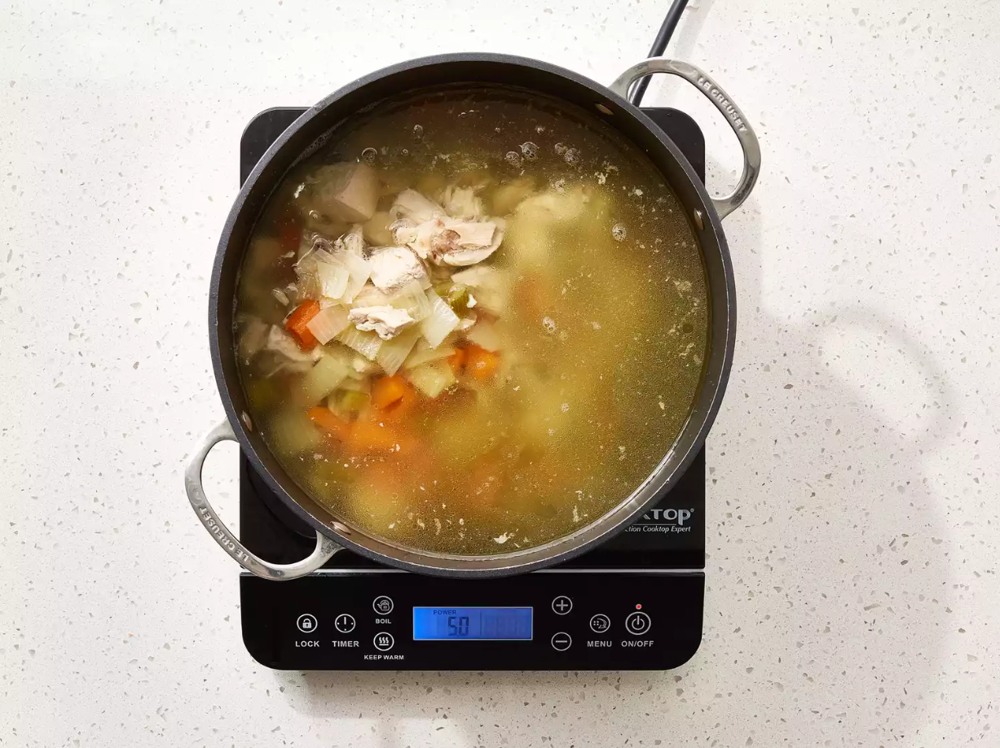

Chicken Soup
This homemade chicken soup recipe is well worth making — it's good for the body and the soul. How is it that plain chicken and vegetables simmered together can taste so satisfying?
You don't have to be sick to deserve to enjoy it!
Chicken Soup Ingredients
These are the simple ingredients you'll need for this chicken soup recipe:
How to Make Chicken Soup
You'll find the full, step-by-step recipe below — but here's a brief overview of what you can expect when you make this easy chicken soup:
- Make the stock by boiling the chicken and veggies until the meat is falling off the bone.
- Remove the chicken and cut into pieces (discard skin and bones).
- Strain the vegetables (reserving the stock) and cut into pieces. Rinse the pot.
- Return everything to the pot. Heat the soup through and season to taste.
How to Store Chicken Soup
Allow the chicken soup to cool, then transfer it to an airtight container. Store in the refrigerator for three to four days. Reheat thoroughly in the microwave or on the stove.
Can You Freeze Chicken Soup?
Yes! You can freeze chicken soup for up to six months. Pour serving-sized portions of the cooled soup into freezer bags labeled with the date. Leave a little room at the top to allow for expansion,
then squeeze out the excess air and freeze flat. Reheat on the stove.
Ingredients for 10 Servings
- 1 (3 pound) whole chicken
- 4 carrots, halved
- 4 stalks celery, halved
- 1 large onion, halved
- water to cover
- salt and pepper to taste
- 1 teaspoon chicken bouillon granules (Optional)
Directions
Step 1
Gather all ingredients.
Step 2
Place chicken, carrots, celery, and onion in a large soup pot; add enough cold water to cover. Bring to a boil over medium heat; reduce heat to low and simmer, uncovered, until meat falls off
of the bone, about 90 minutes. Skim off foam every so often, as needed.

Step 3
Remove chicken from the pot and let sit until cool enough to handle; chop meat into pieces, and discard skin and bones.
Step 4
Strain out vegetables, reserving the stock; rinse the soup pot and return the stock to the pot. Chop vegetables into smaller pieces; return chopped chicken and vegetables to the pot.
Step 5
Warm soup until heated through; season with salt, pepper, and chicken bouillon to taste.
Step 6
Serve and enjoy!
Cook’s Note
If you want chicken noodle soup, add cooked noodles to the pot just before serving.
Nutrition Facts
Servings Per Recipe:10
Calories:152
-------------------------------------------------------------------------------------------------------------------------------------% Daily Value *
Total Fat: 9g ----------------------------------------------------------------------------------------------------------------------- 11%
Saturated Fat: 2g ----------------------------------------------------------------------------------------------------------------- 12%
Cholesterol: 37mg ---------------------------------------------------------------------------------------------------------------- 12%
Sodium: 68mg --------------------------------------------------------------------------------------------------------------------- 3%
Total Carbohydrate: 4g ---------------------------------------------------------------------------------------------------------- 2%
Dietary Fiber: 1g ------------------------------------------------------------------------------------------------------------------ 4%
Total Sugars: 2g -------------------------------------------------------------------------------------------------------------------
Protein: 13g ----------------------------------------------------------------------------------------------------------------------- 26%
Vitamin C: 3mg ------------------------------------------------------------------------------------------------------------------- 3%
Calcium: 24mg -------------------------------------------------------------------------------------------------------------------- 2%
Iron: 1mg --------------------------------------------------------------------------------------------------------------------------- 4%
Potassium: 227mg --------------------------------------------------------------------------------------------------------------- 5%
* Percent Daily Values are based on a 2,000 calorie diet. Your daily values may be higher or lower depending on your calorie needs.
** Nutrient information is not available for all ingredients. Amount is based on available nutrient data.
(-) Information is not currently available for this nutrient. If you are following a medically restrictive diet, please consult your
doctor or registered dietitian before preparing this recipe for personal consumption.